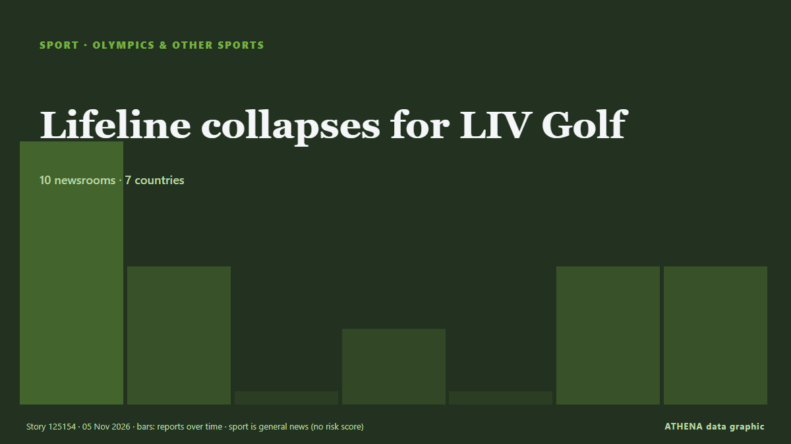

Sport
SponsoredPresented by  Cybernetics and Artificial Intelligence Lab Welcome to the Cybernetics and Artificial Intelligence Laboratory, established at the Department of Business Administration of the National and Kapodistrian University of Athens. The lab is headed by Professor Dimitrios Thomakos. The lab aims to do research that can be published in top venues. Our research uses tools and methods of Artificial Intelligence, and lies in the following areas: - Forecasting - Decision making - Cyber security - Finance We are always looking forward to collaborating with exceptional students!
Cybernetics and Artificial Intelligence Lab Welcome to the Cybernetics and Artificial Intelligence Laboratory, established at the Department of Business Administration of the National and Kapodistrian University of Athens. The lab is headed by Professor Dimitrios Thomakos. The lab aims to do research that can be published in top venues. Our research uses tools and methods of Artificial Intelligence, and lies in the following areas: - Forecasting - Decision making - Cyber security - Finance We are always looking forward to collaborating with exceptional students!

Olympics & other sportsLifeline collapses for LIV Golf
A financial lifeline that would have saved LIV Golf has been pulled off the table. from Sydney Morning Herald
| 23 Oct | 16 |
|---|---|
| 24 Oct | 9 |
| 25 Oct | 32 |
| 26 Oct | 45 |
| 27 Oct | 64 |
| 28 Oct | 62 |
| 29 Oct | 72 |
| 30 Oct | 102 |
| 31 Oct | 74 |
| 1 Nov | 79 |
| 2 Nov | 108 |
| 3 Nov | 103 |
| 4 Nov | 64 |
| 5 Nov | 2 |
Real Madrid confident of signing Man Utd's Gabriel
Real Madrid have reached a verbal agreement with 16-year-old JJ Gabriel over a potential move to the Santiago Bernabeu. from Sky Sports
Como equal Champions League record with stunning 9-1 win at Lens
Italian outfit Como claimed a stunning 9-1 win away to Lens in France in the Champions League on Wednesday, equalling the record for the most goals scored in a game by a team in the modern era in… from Vanguard
Nadal set to join Real Madrid board of directors
Tennis great Rafael Nadal is set to join the board of Spanish football giants Real Madrid. from BBC News
Djokovic keeps alive bid to squeeze into ATP Finals
Novak Djokovic kept alive his last-ditch bid to qualify for this year's ATP Finals by grinding out a first-round victory over Valentin Vacerot at the Paris Masters. from MyJoyOnline
New Mexico's Deb Haaland on making history as first Native American woman elected governor
The election led to several historic firsts. from PBS NewsHour
Erling Haaland is Manchester City’s hero again in entertaining win in Leipzig
Haaland scored his 14th goal of the season to down RB Leipzig. from The Irish News (Belfast)
Djokovic battles through Paris Masters opener
The victory over Valentin Vacherot kept alive the Serbian 24-time Grand Slam champion's chances of landing a spot in the season-ending ATP Finals. from Free Malaysia Today
Irish Olympian Ciara Mageean was a 'talented and inspirational human being'
‘Devastated’ Lady Mary Peters leads condolences. from Belfast Telegraph
McIlroy backs claims LIV wanted to 'destroy' DP World Tour
Rory McIlroy backs DP World Tour CEO Guy Kinnings' comments saying that LIV Golf started with the intention of 'destroying' the former, as he welcomes a reset in men's golf. from Sky Sports
Rybakina, Gauff drawn together at WTA Finals, Sabalenka faces Andreeva
World number one Elena Rybakina and American Coco Gauff were drawn in Group One for the WTA Finals, while second-ranked Aryna Sabalenka will face third-ranked Mirra Andreeva in Group Two at the… from Business Recorder
Bayern skeleton crew sink Atletico in Champions League
MADRID: Bayern Munich overcame a horror list of absences to cruise to a 2-0 win away at Atletico Madrid in the Champions League on Tuesday. from Arab News
Cold Play: Nations Line Up To Boycott Ice Hockey Games Against Russia
A growing list of countries are lining up against a court decision allowing Russia to rejoin international ice hockey events, saying they will boycott any team Moscow sends, putting the World… from RFE/RL (English)
Tributes pour in for Tenerife striker Jesus de Miguel as Raphinha sends “message of strength” to family
Gunners paid their respects at their training ground hours after Spaniard’s tragic death. from Evening Standard (London)
India vs Pakistan in Men’s ODI World Cup 2027 attract nearly 84 lakh ticket applications
India and Pakistan will face off on October 10 at Johannesburg’s Wanderers stadium in South Africa — a venue that has a capacity of just 34,000 spectators. from Sportstar
PSG breaks Champions League record with four goals against Villarreal
French giants Paris Saint-Germain (PSG) have set a new UEFA Champions League record after scoring four goals in just 17 minutes during their away match against Spanish side Villarreal in the… from AzerNews
Aston Villa make legal action decision after Jamie Carragher apology
Pundit had told Villa supporters to "shut the f*** up" from Evening Standard (London)
Qatar sends 15 buses to Senegal ahead of Dakar 2026 Youth Olympics
With just days to go before the start of the Dakar 2026 Youth Olympic Games, 15 buses gifted by Qatar arrived in the Senegalese capital. from Africanews (English)
Palace lose appeal against Mateta red card
Palace striker was sent off during the defeat to Spurs. from Evening Standard (London)
Man City's Foden confident of return to top form after tough spell
Manchester City midfielder Phil Foden said he is beginning to rediscover the form that made him one of the Premier League’s standout players, after a recent scoring streak boosted his confidence… from Business Recorder
FIFA visits Portugal as preparations for 2030 World Cup continue
A FIFA delegation is in Portugal this week to review preparations for the 2030 World Cup, which the country will co-host with Spain and Morocco. from The Portugal News
Jake Paul Faces MMA Star Cedric Doumbe On Christmas Eve In Dubai
Jake Paul will fight French mixed martial artist Cedric Doumbe in Dubai on Christmas Eve as the American makes his comeback after a year out. from The National
West Ham name Scott Parker head coach
LONDON: West Ham announced on Tuesday that they had sacked head coach Nuno Esprito Santo after a disappointing start to the Championship season. from New Straits Times
Saliba returns to Arsenal training after injury layoff
Arsenal centre back William Saliba returned to first-team training on Tuesday after nearly four months out with a back injury. from Cyprus Mail
FIFA’s Infantino ineligible for re-election, says former governance chief
Miguel Maduro insists Gianni Infantino cannot serve more than three terms, pointing to FIFA's statutes. from Al Jazeera English
Kansas Elects Its First Democratic Senator in 94 Years
Adam Hamilton has ousted Republican Roger Marshall in the conservative state, part of a huge night for Democrats nationwide. from Rolling Stone
Asian Cup in Saudi Arabia to be postponed
Saudi Arabia, which will host the FIFA World Cup in 2034, will have an opportunity to use the 2027 Asian Cup as a dress rehearsal for the World Cup. from Sportstar
Barcelona 3-0 Aston Villa highlights and ratings after Champions League defeat
BirminghamLive brings you coverage of Aston Villa's Champions League clash against Barcelona. from Birmingham Mail
20-year-old Antonelli becomes youngest Formula One world champion
Mexico City is up next in the F1 season and Kimi Antonelli is on the brink of being crowned the youngest world champion in the sport’s history. from The National
Everton beat Newcastle 1-0 to pile pressure on Jaissle
Live updates as Matthias Jaissle's side look to bounce back from their Carabao Cup exit. from Chronicle Live (Newcastle)
Bayern are doing well despite rollercoaster week, Kane says
The German champions are without coach Vincent Kompany and several key players through injury ahead of their Champions League clash with Atletico Madrid. from Free Malaysia Today
Hamilton says Ferrari need 'serious talks' after costly Leclerc attack
(ANSA) - ROME, 02 NOV - Lewis Hamilton has said Ferrari need some clear-the-air discussions following an attack from his team mate Charles Leclerc that he said cost the team a one-two at Sunday's… from ANSA English
Glenn Maxwell announces retirement from international cricket
Maxwell, popularly known as 'The Big Show', represented Australia in 149 ODIs, 130 T20Is and seven Test matches. from Times of India
South Africa's Verreynne, Prince receive ICC reprimands
South Africa batting coach Ashwell Prince and wicketkeeper Kyle Verreynne have been reprimanded by the International Cricket Council for showing dissent towards the umpires on the third day of the… from Business Recorder
"Not the time for Russia to return" — Finnish politicians condemn sports court ruling
The Court of Arbitration for Sport (CAS) ruled last week that Russian teams can return to ice hockey’s international tournaments. from Yle News (alternative feed)